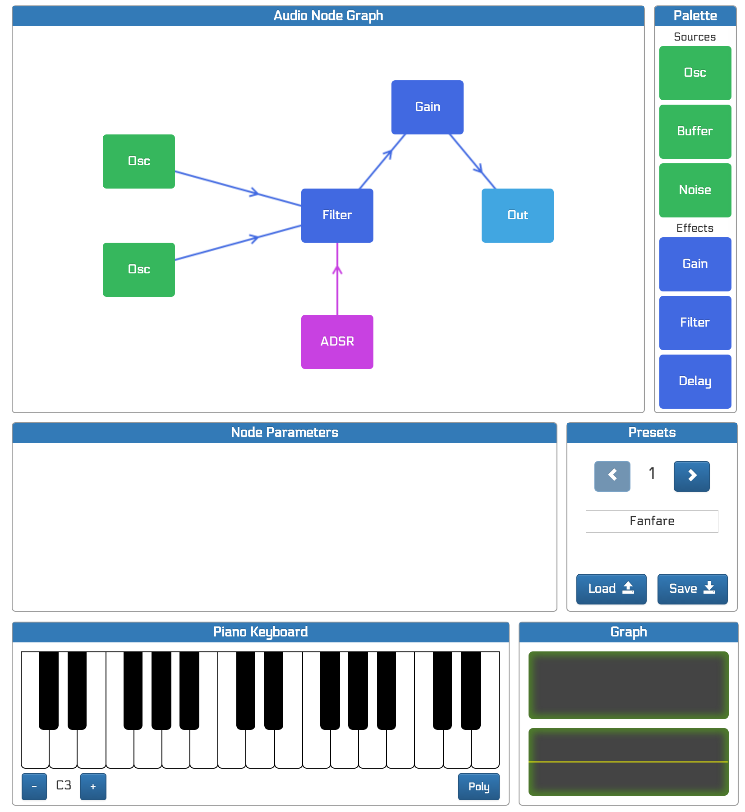

My projects
Synth
Synth (until a better name is found) lets you graphically build a modular software synthesizer. The Web Audio API is used for generating the sound.
Here is a sample screenshot:

Using synth:
- Click any synth node from the palette at the right to add it to the canvas. New nodes are always placed at the center of the canvas and must be manually placed elsewhere.
- Use regular drag & drop to move audio nodes around in the canvas
- To connect two nodes:
- Place the mouse pointer over the source node
- Press the shift key
- Move the mouse pointer to the destination node (but don't press the mouse button or you will start dragging the node)
- Release the shift key to make the connection
- To disconnect two nodes, simply make the same connection again, and this time it will be removed
You can try it here.
Synth repo is here. Please read the ToDo list in README.md before sending any bug report of suggestions.